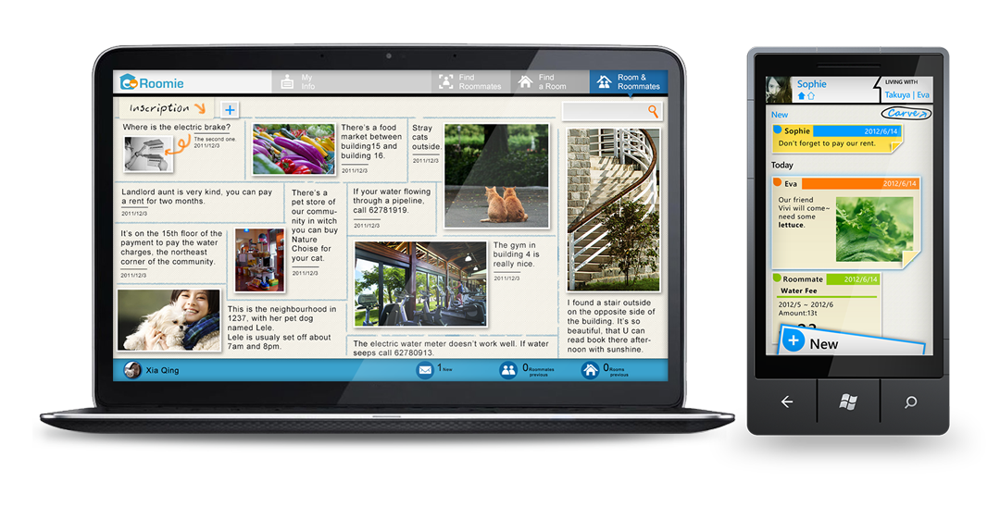

Roomie
First Step to a Happy New Life Design for Youth in Traditional PeriodThree person’s project ( Team leader)
2011.7-2012.7
Background
Housing renting is the first big thing for Chinese young people after they finish the collage life and go to work in the society. They will suffer a lot to find convenient apartment and companionable roommate during this transition period. We design a solution for the youth to enjoy the new life by integrating the virtual information and physical world together.
Target User
Young people, who have graduated from universities and just start their new careers, always face many problems in new environment. They need time to adapt to the new life. We call these young people the youth in transitional period. The young people are active and full of energy, while they are sensitive and have little experience at the same time. They are going to face the new social circles, new working environment, new living conditions, new income and so on. They are driven to adapt to the new life, which makes them feel stressful, anxiety and worried. They need to communicate with others, establish their new circles and get enough experience. They also need to try their best to manage their time and money reasonably.
User Study
Workbook: We used workbook as a tool to help users remember the details of their daily life. We gave them spaces for drawing, in order to get some concrete visual representation. Interview: We mainly interviewed 3 target users, trying to find the reasons of some answers on the workbook, so that we could make more clear about the users’ need. Journey map: We analyzed the results of user study, and made journey maps of users’ daily life to present their life status. And we build a persona to present users’ problems and needs in their transitional period. Persona: Based on the research data, we built 3 persona to get the design insight.
Design Solution
The youth in traditional period are facing lot of problems. The lack of experience and information, the troubles in living and working, and the heavy financial burden always make them feel stressed and anxiety. After the user research, finally we chose improving their house-renting life as our design opportunity. Since the easy house-renting life can give the young people more time to work and rest: they can concentrate on learning new things and getting experience without worrying about the house full of troubles; they can save the money which should have been used for moving across the city; and they can pay more attention to self-improving and their health. What’s more, good roommates can share feelings with them, and can help in enriching experience and enlarging social circles. Roomie is the platform we designed for the young people in traditional period to find suitable roommate and live a happy sharing life.
Interaction & UI Design
Microsoft Design Expo 2012
We attend the Microsoft Design Expo 2012 in Seattle,and won the Best Concept.